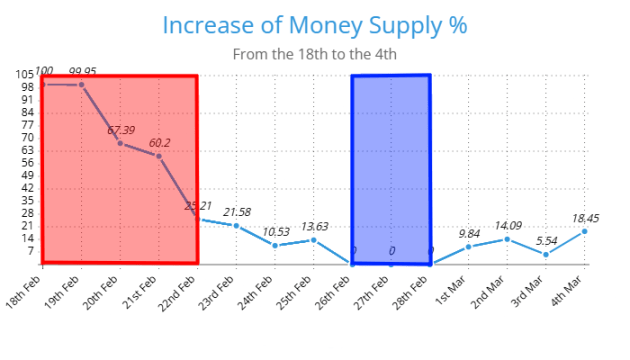
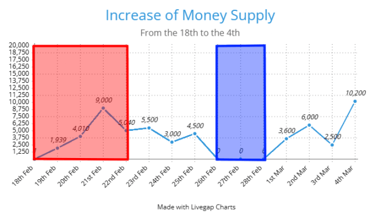

Ostojanomics [Written by Ostoja]
Any words highlighted in red are defined at the bottom of the article.
In this article I will be explaining the basics and fundamentals of Ostojanomics and why they are the only real system of economics we can implement that would lead to a successful and prosperous economy.
The simple explanation of the basis of Ostojanomics is the usage of a currency as a means of exchange. Usually in Minecraft a currency has a basis in a certain resource, however the Achoran Sheckle avoids this.
The reader might ask how come? Whenever I come to the bank I must exchange diamonds to get Sheckles in return? Wouldn’t this mean they are based on the diamond?
No, the currency itself has no value on its own. The diamond represents the exchange relation to get the currency which is only a means of exchange. What I mean by this is, the currency itself has no material value. Effectively it’s a meaningless piece of paper. The value it provides is as a bridge between two people and their economic needs.
Say Vas wants to gather blocks for his build, and Beton has these blocks. But Beton doesn’t need Vas’ services. They would exchange Sheckles so that Beton could in the future buy something he wants from Envi, who could in return buy something from Tris who then buys from Vas and so on.
(The people used have no actual rhyme or reason for being mentioned other than a simple example and the statements of the article in no way attempt to claim events taking place in real life)
In this example we show that the currency itself has no objective value, which allows it to freely adapt to the market and the people’s subjective needs. Now despite not having any objective value on its own it still functions with the law of supply and demand. This allows the Bank of Achora to manipulate its value via the means of deflation and inflation.
In other more simpler terms: Ostojanomics function in a way that the means Achoran Sheckle is only based on the community that uses it, instead of any intrinsic material value, allowing it to not be affected by outside forces such as scarcity of other resources. Rather it exists in its own economic bubble affected purely by the policy of the Achoran Bank and the market’s perception of it.
As mentioned beforehand the implementation of Ostojanomics is based on the transaction between the bank and citizens via the means of trading a diamond for 100 Sheckles in a limited amount of trades per market cycle. This ensures a steady and controllable currency supply.
It has been largely well received by the public with a 52.6% of the active citizens having used and interacted with the currency and a 15.7% being unsure
This leaves only 31.5% of the population that haven’t used the currency. Some that simply haven't had the opportunity due to their own limitations and some who simply refuse to do so due to political or personal reasons. Considering the fact the currency officially began printing 15 days ago these aren’t bad statistics. Not to mention the fact that 5 of those days were the introduction phase, and for 3 of those days no money was printed due to my limitations and inactivity.
Ostojanomics see taxes as a means of currency control the same way we see diamond exchange rates and their daily limits. It’s a great way to equalize the amount of currency people have due to the fact they are forced to convert their diamonds into currency allowing for more money being printed and thus reducing the choke-hold certain individuals have on the market.
Not to mention the fact that this money will be reinvested into the economy directly through the means of paying workers and making sure less fortunate citizens may earn money via other means other than just mining diamonds for them or providing services to other players.
Taxes are just one tool used in Ostojanomics to control currency stability and value.
The main two critiques of Ostojanomics come from the Left wing politicians Midgetgrunt and Amboush. They both have their own take on how to dismantle and replace the current status quo and their arguments and plans are the following:
Midget wishes to simply go back to bartering instead of relying on a currency as he thinks it's much simpler and more reliable. He and myself have had extensive public debates over this subject and Midget has agreed not to push against the usage of the currency. Nonetheless he still holds to his belief of not using the currency and opposes Government usage of it, in order to prevent bartering being replaced.
Amboush wishes to create a worker point system, resetting every week based on contributions done to the state. These points can be used to buy services and resources from the government. Believing this simply cuts out the middleman of currency and exchange simplifying economic relations between Achorans and the government. Seeing the government as the only necessary arbiter for a system resembling a currency.
If you wish for me to write a detailed article arguing against these theories I may do so if public support shows that it is wanted. To show you want this article to be written simply react to the message Taungoo sent of the link to the article with a bag of money emoji.
Red = Introduction Phase
Blue = Freeze Phase
(Right now refers to 05.03.2025 2:21 AM CET, the time the article was written)
 Total money in circulation as of right now is: 55 290
Total money in the banking system as of right now: 23 470
% wise 42.4% of the money in circulation is in the Bank of Achora
Largest increase of money supply outside unstable monetary periods: 10 200
Largest increase of money supply % outside unstable monetary periods: 21.58%
% of active citizens who haven’t used/interacted with the currency: 31.5%
% of votes for the Red Gruntist Coalition: 36.3%
The richest players are:
- Beton
- Vas
- Ostoja (?)
Explanations:
- Market cycle = The time a person can buy currency, from 18:00 CET up until the 24 hours pass
- Introduction Phase = The phase of the introduction of the Achoran Sheckle when buying was unstable and extremely limited
- Unstable monetary periods = The periods in which printing of the currency was unreliable and unstable leading to unreliable statistics.
- (?) = Suspected with the current information at my disposal but not fully confirmed.